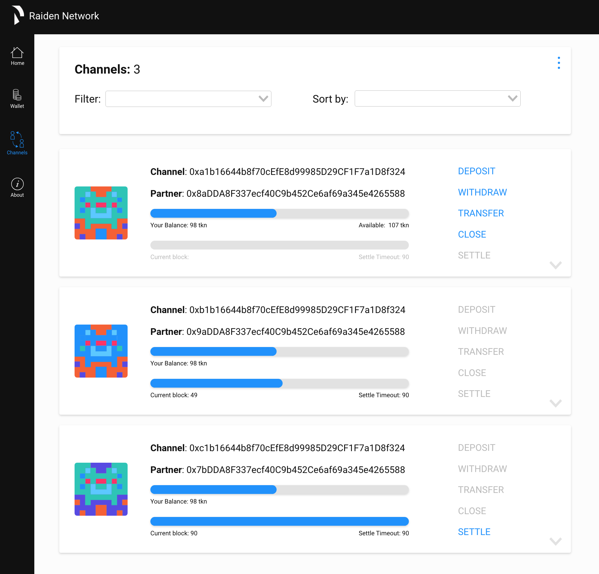
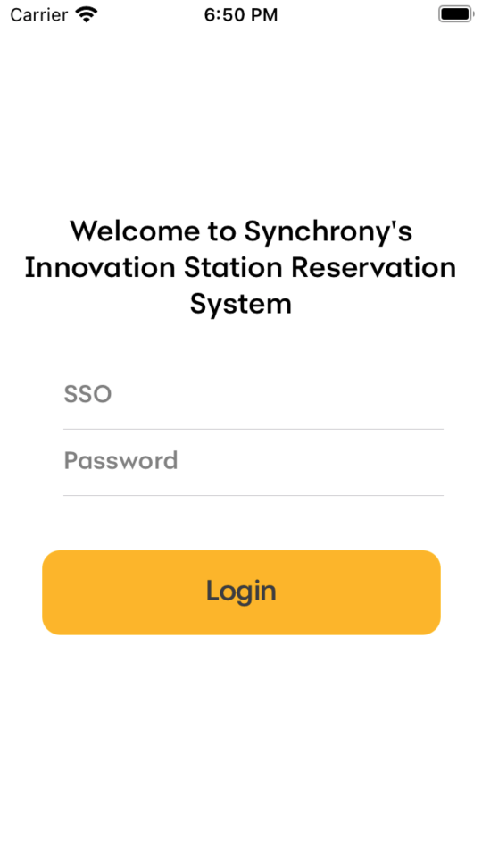
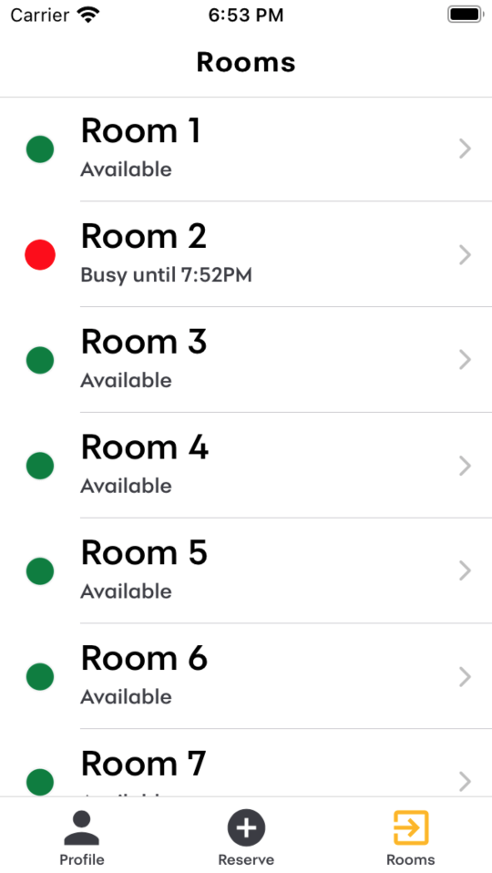

Product designer with a drive to understand users and evolve product stratetgy.
Selected work

Raiden
UX Design
Web-UI design for Raiden, an open source project for Ethereum token transfers.
View Details ↗


Synchrony
UX Design, App Development
Mobile app design and development for employees to manage room reservations.
View Details ↗